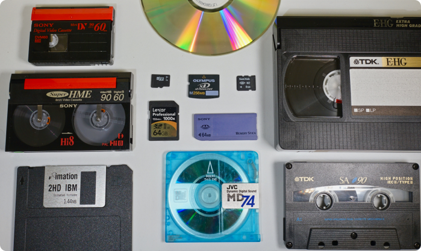

Thipom Digitalisatie



Welkom bij Thipom Digitalisatie.
U bezoekt deze site waarschijnlijk omdat u oude media heeft die u wilt laten omzetten naar digitale bestanden. Wellicht omdat de geschikte apparatuur al lang uit huis is, of omdat u de opnamen op uw computer of telefoon wilt opslaan, afspelen en/of delen. Omdat opnamen op fysieke media een beperkte houdbaarheid hebben voordat de kwaliteit gestaag afneemt, is digitalisatie ook voor archivering en het behouden van herinneringen een goede oplossing.
Hobbymatig ben ik voortdurend met audio en video in de weer. Zo heb ik een hoop verschillende (semi-professionele) audio- en videoapparatuur tot mijn beschikking. Om het voortdurende onderhoud hiervan te bekostigen, digitaliseer ik met plezier uw oude videobanden, cassettes, en andere gegevensdragers tegen een eerlijk tarief.
Bekijk hoe het werkt, de tarieven of meld uw opdracht meteen aan.